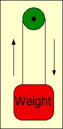
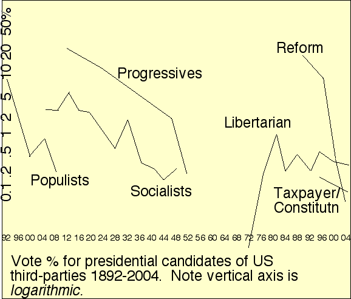

History shows: US third parties all seem to reach their all-time peak within about 1-16 years after founding, then diminish. Once they've fallen to about 5% of what they were at their peak, they die. Their founders perhaps suffer from the delusion that their idea, that new socio-politico-economo-religious-ecological idea that is special to their party, is so wonderful or different that, maybe, just this once, that party will be able to overcome Duverger's law and win, or at least grow into a viable party.
 And so, they foolishly choose once again to concentrate on their wonderful idea and to ignore (or nearly so) the idea of improving the voting system. They don't understand that it just doesn't matter what their idea is. No matter what it is, if one of the major parties gives some slight lip service to that idea, say equivalent to just 2% of what the third party wants, then even plurality voters who like that third party best, are fully strategically justified mathematically/statistically in voting major-party, and in fact do so – in around a 10:1 ratio. Nothing can overcome that ratio. And then Duverger's law wins and they die like usual.
In fact, the more compelling and important their idea is, the more justified voters are in voting major-party to try to make the major-party that most-supports that idea win – as opposed to helping their major-party opponents win by voting third-party. The situation is rather like the weight illustrated. No matter how heavy you make the weight, it is not going to pull itself up by means of the rope attached to the pulley. You can try adding more weight, and oiling the pulley with your special new kind of oil, and vibrating the weight, and whispering incantations to the weight, but those measures just aren't going to work.
Let's take a look back through history at the most prominent US third parties. Most have either gone the national route by trying to run for President, or concentrated on local races. The former was futile because they never could come close to winning. The latter, in contrast, could yield victories, but also was futile because the whole raison d'etre of these third parties were ideas only really applicable on a nationwide scale.
The populists began with farmers hurt by falling food prices. The fall was caused by greater mechanization and better railroad transport which made markets more competitive, but the Populists refused to recognize that and instead blamed their problems on a vast vague money conspiracy, excessive rail freight rates, etc. Later the farmers were joined by Western Silver Miners who wanted the USA to base its monetary system on silver (not gold) and invented all sorts of irrational theories about why that would cure all ills. The populists were correct that there were plenty of problems with the banking and currency system, and that there was plenty of big-money corrupt influence on US politics. They reached their peak in their first presidential run in 1892 when their candidate James B. Weaver got over a million popular votes (8.5%). In 1896 they simply promoted the Democrats' presidential candidate William Jennings Bryan, but ran a different vice president (T.E.Watson) than the Democrats' choice (A.Sewall), creating much confusion and allowing the Republican W.McKinley (supported heavily by the hated corrupting railroad plutocrats!) an easy victory. They then diminished, e.g. with Watson collecting only 0.2% of the presidential votes in 1908; and after 1912 they were dead.
| year | canddt | vote/total-votes | =% |
|---|---|---|---|
| 1904 | E.Debs | 402,810 / 13,525,002 | 3.0 |
| 1908 | Debs | 420,852 / 14,889,261 | 2.8 |
| 1912 | Debs | 901,551 / 15,036,407 | 6.0 |
| 1916 | A.Benson | 590,524 / 18,536,585 | 3.2 |
| 1920 | Debs | 913,693 / 26,765,180 | 3.4 |
| 1928 | N.Thomas | 267,478 / 36,807,012 | 0.727 |
| 1932 | Thomas | 884,885 / 39,751,898 | 2.224 |
| 1936 | Thomas | 187,910 / 45,647,699 | 0.412 |
| 1940 | Thomas | 116,599 / 49,902,113 | 0.234 |
| 1944 | Thomas | 79,017 / 47,977,063 | 0.165 |
| 1948 | Thomas | 139,569 / 48,793,535 | 0.286 |
The Socialist party reached its peak of 6% in 1912. It was essentially dead after 1950, although the Socialist Workers managed to get about 0.1% for Linda Jenness in the 1972 and Peter M. Camejo in the 1976 presidential elections. (With the benefit of hindsight, it seems hard to disagree that Debs would have been a better president than Warren G. Harding in 1920.) As far as I know Norman Thomas, the pallbearer for the dying corpse of the Socialist Party, never advocated improving the voting system, despite the fact that was the only possible way for the Socialists to have any chance.
| year | canddt | vote/total-votes | =% |
|---|---|---|---|
| 1912 | T.Roosevelt | 4,122,721 / 15,036,407 | 27.4 |
| 1924 | R.La Follette | 4,831,706 / 29,097,107 | 16.6 |
| 1948 | H.A.Wallace | 1,157,328 / 48,793,535 | 2.4 |
| 1952 | V.W.Hallinan | 135,007 / 61,751,942 | 0.2 |
(Founded 1912 by T.Roosevelt; after 1952 ceased to exist.) The progressives apparently did not run presidential contenders except in the years shown, but were able to re-awaken from their slumbers at times when an attractive candidate came along – although they continuously went downhill. (In 1912 and 1924 probably the Progressive candidates were objectively the best ones running.) Even at the party's death-knell in 1948, candidate H.A.Wallace in his long address accepting his nomination did not even mention the idea of improving the voting system.
| year | canddt | vote/total-votes | =% |
|---|---|---|---|
| 1992 | H.R.Perot | 19,743,821 / 104,423,923 | 18.9 |
| 1996 | Perot | 8,085,402 / 96,275,401 | 8.4 |
| 2000 | P.Buchanan | 449,225 / 105,417,258 | 0.4 |
| 2004 | R.Nader | 463,653 / 122,293,332 | 0.4 (<0.1?) |
| 2008 | ? |
(Re the "0.1?": In 2004, Nader ran in most states as an Independent and hence collected only a small number of his votes under the Reform Party flag.) The reform party appears to be near death; it has already split into several struggling remnants each of which has microscopic funding compared to what it used to have. The switch from supporting Buchanan to Nader was, to say the least, drastic. Even at the party's death-knell in 2000, candidate P.Buchanan in his long address accepting his nomination did not even mention the idea of improving the voting system.
| year | canddt | vote/total-votes | =% |
|---|---|---|---|
| 1992 | H.Phillips | 43,434 / 104,425,014 | 0.042 |
| 1996 | H.Phillips | 184,820 / 96,275,401 | 0.192 |
| 2000 | H.Phillips | 98,020 / 105,405,100 | 0.093 |
| 2004 | M.Peroutka | 144,498 / 122,293,332 | 0.118 |
| 2008 | C.Baldwin | 199,314 / 131,257,328 | 0.152 |
This party changed its name from "taxpayers" to "constitution." It seems too early to say what will happen to it. As one sobering possibility, consider the fate of the CITIZEN'S PARTY organized by environmental scientist Barry Commoner to support his 1980 presidential run. Commoner got 233,052/86,509,678=0.269% of the votes and then the Citizen's Party promptly collapsed and vanished from the scene. (Note that this is a substantially larger vote – both as a percentage and as a count – than the Taxpayers/Constitution party has ever gotten.) As far as I know, neither Peroutka nor Commoner ever called for improving the voting system by replacing plurality with something better. E.g. in Peroutka's acceptance speech of his 2004 party nomination, he never mentioned the idea – although he plainly was aware of the "lesser of two evils" strategic-voting phenomenon with plurality, he apparently thought that it would be overcome by righteous religious rage. If that was Peroutka's thinking, he guessed very wrong. Quote:
|
[The American People] are enraged by blatant attacks on the right of the people to acknowledge the God upon whom our nation was founded. They don't want to waste their vote on the lesser of two evils anymore. They have seen more than enough evidence of evil and corruption from both major parties to realize that it's just as wrong to vote for Gomorrah as it is to vote for the slightly more evil Sodom. |
Remember the paradox of the weight and the pulley. It will take more than religious righteousness to make the Constitution party get ahead, Mr. Peroutka; all the Christian righteousness in the world could push down on that weight, but still the pulley would not pull it up. Imagining so is just a logico-physical fallacy of the sort the Devil loves to tempt us into by making us think what we want to think rather than the truth. You need to support range voting. Righteousness can win, but only if given the right tools to do the job, not if it is forced to use the Devil's tools.
| year | canddt | vote/total-votes | =% |
|---|---|---|---|
| 1972 | J.Hospers | 3,674 / 77,744,027 | 0.005 |
| 1976 | R.MacBride | 172,553 / 81,531,584 | 0.212 |
| 1980 | E.Clark | 921,128 / 86,509,678 | 1.065 |
| 1984 | D.Bergland | 228,111 / 92,653,233 | 0.246 |
| 1988 | R.E.Paul | 431,750 / 91,594,686 | 0.471 |
| 1992 | A.V.Marrou | 290,087 / 104,423,923 | 0.278 |
| 1996 | H.Browne | 485,000 / 96,275,401 | 0.504 |
| 2000 | Browne | 386,000 / 105,417,258 | 0.366 |
| 2004 | M.Badnarik | 397,265 / 122,293,332 | 0.325 |
| 2008 | Bob Barr | 523,686 / 131,257,328 | 0.399 |
The Libertarians still seem alive and kicking, but judging from history, presumably also are on a downward trajectory and anyhow even at their peak in 1980 never came close to any of the first three parties we discussed. Today's third parties are dwarfs even compared to the third parties of the 1900s. Can the Libertarians afford to sit around twiddling their thumbs focusing on things other than trying to change the voting system? Probably not. If we miss the Iowa '08 Range Voting opportunity, it quite likely will not recur for another 8 years: 2016. Add 12 more years to this Libertarian trajectory and extrapolate yourself. If the Libertarians drown in 2012, it will be too late because they waited too long before making range voting their top priority.
Later note (added 2018): I talked face to face twice with Bob Barr, Libertarian candidate for US president in 2008, slightly before he began that run. I told Barr he needed to make voting-system-reform be a main topic of his presidential run. Barr refused, and insisted he was an expert who knew far more about political strategy than I, and that his strategy would win him the presidency while mine would be a waste of time. Specifically, Barr's strategy was to emphasize "politicization of the US justice department" as his main issue, and ignore the whole issue of voting-system-reform. I argued that actually, Barr would not come close to winning the US presidency; and if he focused on voting system reform he could increase media attention on that subject by maybe a factor of 10 – whereas if he focused on politicization of the US justice department (which was already getting plenty of media coverage without any help from Barr) he'd increase that media by maybe 5%.
What was the result? Well, amazingly enough, Barr's expert prediction he would win the US presidency did not pan out, while my prediction he would lose it by a huge margin, did. And the Libertarians lost yet another opportunity to advocate an issue that actually mattered for their own survival. Indeed in retrospect most Libertarian party members now regard Barr as simply having used their party to gain some nationwide fame to use as a tool to help him try later to resume his political career as a non-Libertarian.
| year | canddt | vote/total-votes | =% |
|---|---|---|---|
| 1996 | R.Nader | 685,297 / 96,275,401 | 0.71 |
| 2000 | Nader | 2,883,105 / 105,417,258 | 2.74 |
| 2004 | D.Cobb | 119,859 / 122,293,332 | 0.098 |
| 2008 | C.McKinney | 161,603 / 131,257,328 | 0.123 |
Finally in 2004, when the Greens (judging by their election result) appeared about to die, Cobb and Badnarik both noted in their debates that they advocated "Instant Runoff Voting." Unfortunately, IRV still leads to 2-party domination and hence would still not help US third parties particularly. They need to advocate range voting which is known to generate far more votes for third parties. (Later note; Badnarik and his Libertarian 2004 running mate Campagna now both have endorsed Range Voting, as did 2004 Socialist US Presidential candidate Walter Brown.)
| > |
Another valid idea was advocated in 2004 by Peter Camejo (then vice-presidential candidate running with Ralph Nader; in 1976 Camejo had been the Socialist Workers presidential candidate): runoff elections. (That is, genuine runoffs, not "instant" pseudo-runoffs.) Runoffs are used in France – which has more than two parties! However, we consider this idea less good than range voting (and indeed disparage any idea requiring extra elections). |